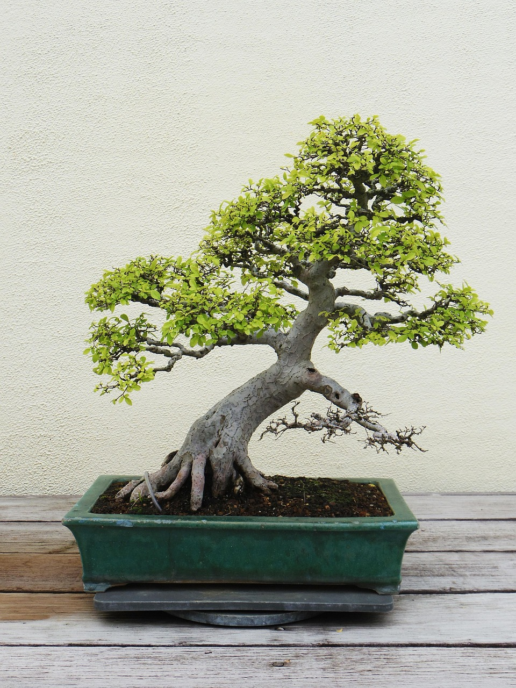

For this week's assignment, I wanted to code something that incorporates leaves from a tree, something that I have a strong personal and sentimental connection to. I first wanted to create a "bonsai tree" that has different leaves on it, where with more time passes the leaves on the branches turn brown, which the user can click on the brown leaves to remove them from the tree, adding another new young leaf onto a branch.
The main element of the code is a class constructor for the leaves, where it has different parameters of the head leaf, its size, how many points it has, its x and y placement, the leaf's age, and the tip of the points. Within the class, the leaf is assigned these parameters while also assigning the lifespan of the leaf, which gives a random starting point for each leaf, and the offset which sets a different starting point for the sway that will influence the way it moves with the wind.
To create leaves on branches, the code uses the resetTree function, where all the process of creating a new leaf lies in. The function first resets the array that holds each leaf's properties, the user can also reset them within the sketch by pressing 'r.' Going through two different loops that is determined by the number of leaves are present within each branch, it then calls the makeLeaf function. With each new leaf, the code will assign the age, using a random function, and its size. Finally, the function pushes the leaf into the array.
The makeLeaf functions actually creates the individual leafs and their unique properties. It first assigns each leaf a unique x and y position in regards to the branch, using the range of the random function. The function then uses *randomGaussian* function to pick a number between 17 and 4 for the size of each leaf, the function has a stronger probability to pick numbers near 17, which allows more leaves to be bigger rather than small. Finally, the function assigns a number of points for each leaf, choosing between 1, 3, or 5 points. Returning the results and parameters back while creating a new leaf object.
Within the class, there are functions that are associated with the class. The display function is where the main drawing of the leaves happen. First, the function checks the color of age, using the *constrain* function to pick an amount of how old the leaf is which affects its color (the younger the leaf, the whiter it is, the older it is the browner the leaf is), using the lerp and map functions to blend the two different colors with each other with the help of 'if statements.' The function then assigns a *sway* to the leaf using the sin function, where it computes each leaf's offset with the timing and wind scales that causes the leaves to sway and move as if they are real. Where it then positions the individual leaf using translate and rotate functions to indicate the direction of the head of the leaf; further giving randomness and realism to each of the leaves within the sketch. Finally, the code generates a random shape for each leaf, where it either draws a simple oval leaf or a leaf with a particular shape. The LLM helped me with this part of the code, where it uses a if statement to check for the original parameters, then it decides to draw the simple or complex shape. The complex shapes are complied of smaller ellipses that are rotated in certain ways to give the feel of a complex leaf shape.
The update function updates the leaf's age while also affecting its size using the lerp method to simulate growth within the leaf. Instead of having the leaf appear on a new branch, matured and big, new leaves will have to grow slowly to their maximum size, to further simulate realism within the sketch.
The isBrown function checks whether the leaf's age is larger than the lifespan of the leaf. If it is, the function returns a boolean variable back.
The function drawTree does what it says, draw the visual representations of the tree. I had a hard time figuring out how to draw the tree in a pleasant manner. I used the LLM's help to give me parameters on how the branches and tree would be drawn. The LLM used the *bezier* function which similar to the line function but it has more character with the curves that it posses. Also, using rect and quad to create the pot body that holds the plant. The illustration of the tree are taken into account and their coordinates are pushed into an array in the start of the code. The array (tips) would act as a placeholder indicator on where leaves should sit on the different branches.
The isBrown function checks whether the leaf's age is larger than the lifespan of the leaf. If it is, the function returns a boolean variable back.
The main interaction of this sketch is located within the mousePressed function, where the function serves as the pluck action for each leaf. The function first cycles through every leaf within the array but backwards (last first), where then it uses a variable that checks whether the mouse position is within the same position as any leaf. I used the LLM help for this part, as I did not how to check whether the user's mouse is within a leaf or not. The function then check whether the location of leaf is correct and if the leaf is brown, where if both statements are true, the function splices the array and removes that leaf from the array and adds a new one using, using the *floor* function round down the random ranges of the branch positions. The function then checks whether the new leaf has the same position as the one that was removed, if they are the same, the function will allocate a new position for the leaf using module and some addition. Finally, the function pushes the new leaf onto the array and returning a boolean.
TThe setup creates the 500x500 canvas while calling the resetTree function, which creates all the visual elements and parameters needed to create the sketch when the user wants to reset the sketch using the 'r' key.
The draw function draws the background, assigns the wind which consists of the map function and noise in correlation to the mouse x's position to inform how the wind should affect the leaves' movement. It also calls the drawTree function which draws the foundational representation of the tree. Finally, the draw function then updates every leaf using a for loop that is in range of the leaf array, and displays each leaf. Where each new frame influences the color, sway, and age of each leaf.
